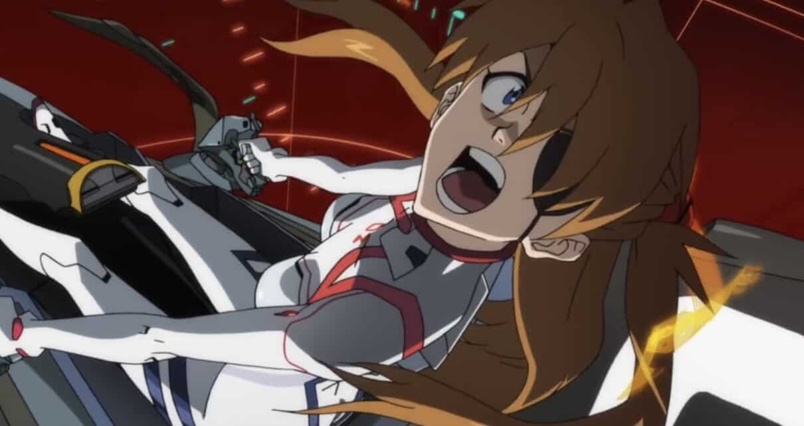

☆Gênero: Mecha/ Psicológico/ Ficção científica
☆lançamento: 08/03/2021
☆diretor(a): Hideaki Anno
☆Studio: Khara,Inc
☆classificação indicativa: +16
☆Duração: 2h 35mn
avaliação:★★★★★(4,8)
Sinopse
Em Evangelion: 3.0+1.01, Misato e o grupo anti-NERV chegam a Paris, uma cidade vermelha em função dos núcleos. A tripulação da nave Wunder pousa em uma torre de contenção. Eles têm 720 segundos para restaurar a cidade. Quando EVAs da NERV aparecem, Mari deve interceptá-los com sua nova unidade 8. Enquanto isso, Shinji e Asuka perambulam pelo Japão.